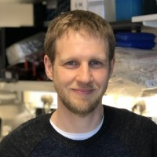

|  |
Steffen Preissler, Dr. rer. nat.Senior Scientist — Protein Science Senior Scientist with broad expertise in molecular biology, biochemistry, and cellular biology obtained in the fields of protein quality control, protein homeostasis regulation and early stage therapeutic antibody discovery. |
| Years | Place |
|---|---|
| Since 2021 | Senior Scientist (early-stage therapeutic antibody discovery) |
| 2013-2021 | Research Associate at the Cambridge Institute for Medical Research |
| 2012 | PostDoc at the department of Molecular Microbiology - University Konstanz |
|
|